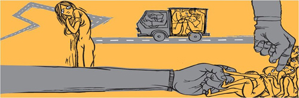

Profundicando un poco mas sobre la Trata de Personas
La Trata De Personas es un fenómeno delictivo que atenta contra los derechos humanos con el fin de la explotación, que puede ser sexual, laboral, esclavitud, servidumbre, adopción ilegal, extirpación de órganos o tejidos; las principales víctimas son niños, niñas y mujeres.
Las personas que cometen el delito de trata siguen un proceso con sus víctimas, el cual se compone de tres fases:
-Captación o enganche
-Traslado
-Explotación
La captación o enganche es el reclutamiento de la víctima. Las personas reclutadoras pueden trabajar individualmente o en redes, la mayoría de las veces se comente mediante la fuerza (secuestro, rapto, amenaza), el engaño o el aprovechamiento de una situación de vulnerabilidad de las personas.

El traslado inicia cuando la víctima es forzada o accede a partir con el tratante desde su lugar de origen, a través de cualquier medio de transporte disponible y en condiciones deplorables.

La explotación es la obtención de beneficios financieros, comerciales o de otro tipo a través de esclavitud, servidumbre, prostitución ajena u otras formas de explotación sexual, explotación laboral, mendicidad forzosa, utilización de personas menores de dieciocho años en actividades delictivas, adopción ilegal de persona menor de dieciocho años, matrimonio forzoso, tráfico de órganos o experimentación biomédica.
Actualmente, las sociedades están cada vez más conscientes de este delito internacional y ya son muchas las películas o documentales cuyo objetivo es reflejar esta problemática mundial. Algunos de estos son Trade, Srpski film, Taken, Nina, "Venganza" (2008), La mosca en la ceniza, "Las elegidas" y Tráfico humano. Su temática principal es, en la mayoría de los casos, el tráfico y explotación sexual de personas.

 Regresar
Regresar